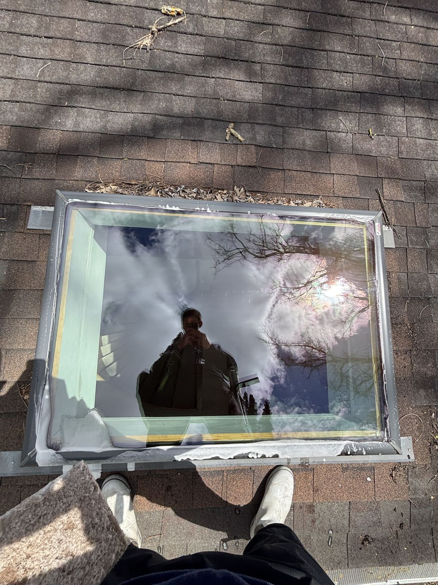
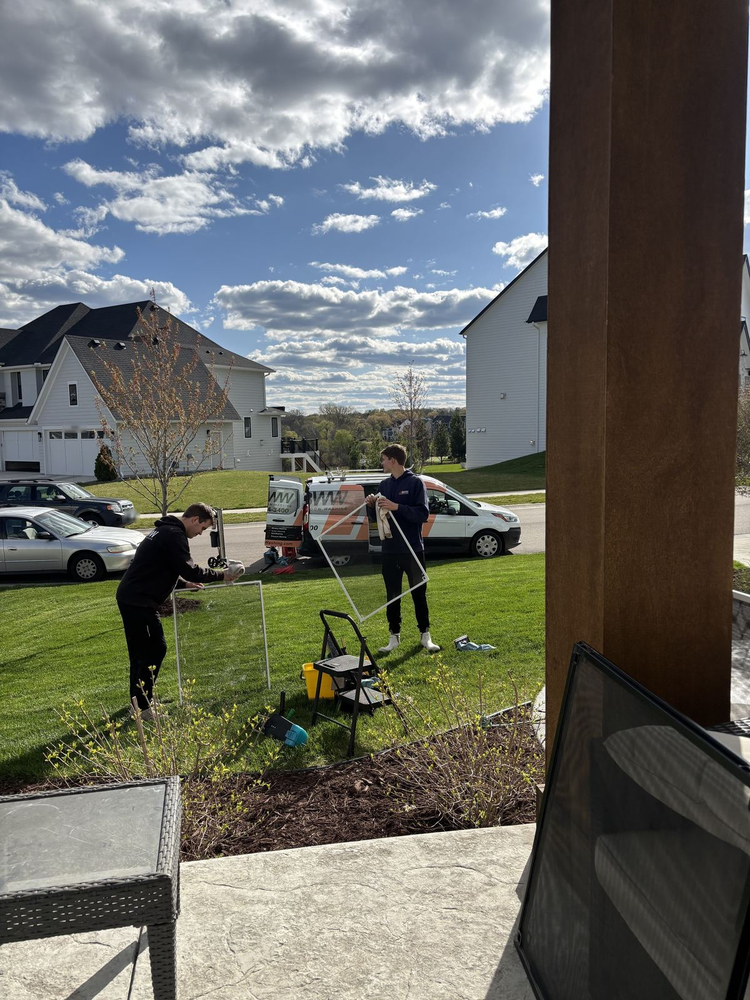

Window Cleaning in Plymouth, MN
Streak-free glass for Plymouth homes, from the neighborhoods around Medicine Lake and Parkers Lake to the newer streets out by the Northwest Greenway. Fully insured, with a 100% satisfaction guarantee.
Save money with every service
Join a recurring plan and save on every visit, the more often we come, the more you save.
Biannual
- Priority Scheduling
- 7-Day Rain Guarantee
- Free Hard Water Removal
Quarterly
- Priority Scheduling
- 7-Day Rain Guarantee
- Free Hard Water Removal
Monthly
- Priority Scheduling
- 7-Day Rain Guarantee
- Free Hard Water Removal
A big city with every age of home
Plymouth is Minnesota’s seventh-largest city, with 81,026 people at the 2020 census, and it’s big enough to feel like several towns. There’s Medicine Lake, the second-largest lake in Hennepin County, with French Regional Park on its north shore; Parkers Lake and its city beach; eight lakes and more than 800 wetlands in all. Summer means Music in Plymouth at the Hilde Performance Center, and the Northwest Greenway runs about two miles of wooded trail out toward the city’s newest neighborhoods.
Plymouth sits between our home base in Delano and Minneapolis, about 30 minutes east of us, so it’s an easy stop on our route. We cover the whole city, from the east side near Medicine Lake to the northwest corner.
From 1980s classics to brand-new builds
Much of Plymouth was built between the 1970s and the 1990s, while the northwest corner, some of the city’s last rural land, filled in with newer homes, most of them built after 2000. So we see everything from sliding windows whose tracks and screens need detailing to two-story walls of glass. Our water-fed poles reach tall glass from the ground, and track detailing and screen cleaning take care of the rest.
Hard water, iron and summer sprinklers
Plymouth’s city water is very hard (a local water-treatment company puts it at 22 to 24 grains per gallon), and the city itself notes that the iron and manganese it treats for can cause staining. From May through September its watering rules keep lawn sprinklers off from noon to 5 p.m., so they run mornings and evenings, and lower windows facing the lawn catch the spray. Our water-fed poles rinse with purified water, so nothing dries into spots behind us; for spots that have already built up, we’ll look at the glass and quote our hard-water stain removal.
A Tree City with lakes and wetlands
Plymouth has been a Tree City USA for more than 40 years, and with its lakes and wetlands, most homes have plenty of trees and greenery around them. That means pollen in spring and sap in summer on your windows and screens, so a late-spring cleaning is the one to keep on the calendar.
Jobs we’ve done in Plymouth


Plymouth window cleaning FAQs
How often should I get my windows cleaned in Plymouth?
Can you clean the windows on a two-story new build?
Do you clean screens?
How do quotes work?
Ready for cleaner windows in Plymouth?
Get your free, no-obligation window cleaning quote for your Plymouth home today.